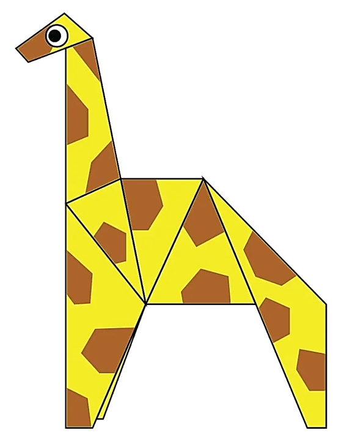
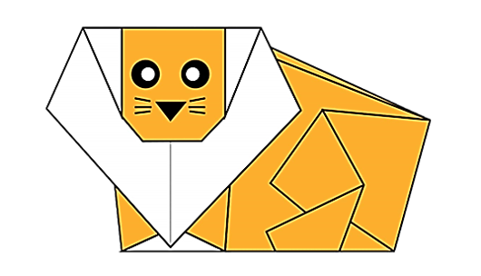

Step by step diagrams are probably the most popular and easiest to follow way to show how to fold things out of paper.
Trying to find good original instructions on the Internet can be a lot of work though. To help your search we've put
together the largest database of free original diagrams anywhere on the Internet.
ORIGAMI DESIGNS

CAMEL ORIGAMI INSTRUCTIONS
- Camels have three sets of eyelids and to keep sand out of their eyes.
- Camels can completely shut their nostrils during sandstorms.

CHAMELEON ORIGAMI INSTRUCTIONS
- Unlike many lizards, chameleons can't regrow their tails.
- Skin crystals enable them to change color at will.

PIGEON ORIGAMI INSTRUCTIONS
- Pigeons are renowned for their outstanding navigation abilities.
- Pingeons have excellent hearing abilities.

TEDDY BEAR ORIGAMI INSTRUCTIONS
- The official term for a teddy bear collector is an ‘arctophile’.
- The term bear-hug was first recorded in 1846.

PANDA ORIGAMI INSTRUCTIONS
- Giant pandas are good at climbing trees and can also swim.
- An adult can eat 12–38 kilos of bamboo per day!

CICADA ORIGAMI INSTRUCTIONS
- There are around 3,000 cicada species.
- Their wings can seem rainbow when held up to a light source.

GIRAFFE ORIGAMI INSTRUCTIONS
- Giraffes sleep and give birth standing up.
- Their tongues can grow up to eighteen inches long.

LION ORIGAMI INSTRUCTIONS
- Lions are the only cats that live in groups.
- A lion's roar can be heard up to eight kilometres away.